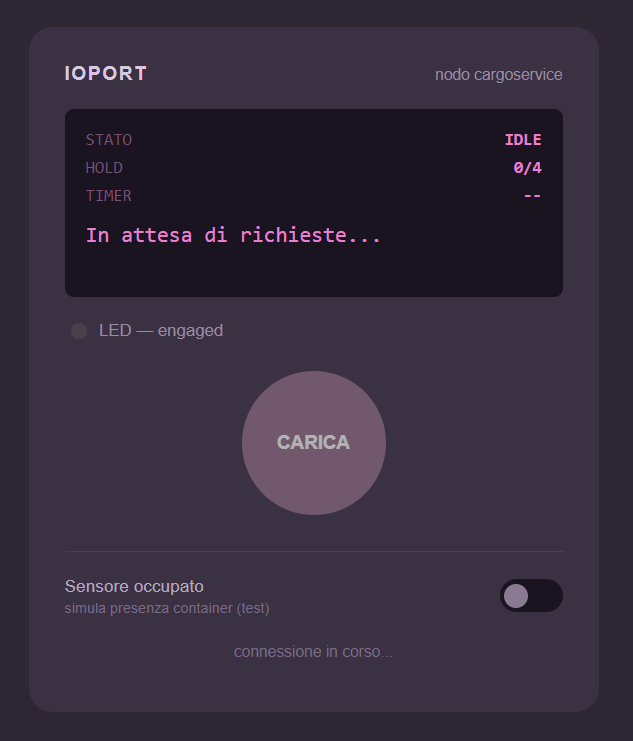

Goal
Realizzare il sottosistema che gestisce l'accettazione/rifiuto di una richiesta di carico, il timeout dei 30 secondi, e l'interazione reale con lo IOPort: pulsante, sensore, display e LED. cargoservice riceve loadrequest, interroga Hold, risponde con loadaccepted/loadrejected e transita da Idle a Engaged; se il timeout scade torna a Idle liberando lo slot. Lo IOPort è realizzato come un secondo QActor, con un pannello di controllo web collegato via WebSocket che ne simula l'hardware fisico.
Problem analysis
IOPort come QActor
È stata adottata la modellazione dello IOPort come QActor indipendente (vedi sprint1.qak): pressione del pulsante, variazione del sensore e aggiornamento del display sono espressi come messaggi (pushButton, setOccupied, updateDisplay) depositati nella coda dell'attore, riproducendo lo stesso modello di interazione che si avrebbe con un firmware reale su PicoW e non richiedendo modifiche strutturali quando l'hardware fisico verrà integrato.
Scelta del canale WebSocket per la GUI
L'interfaccia web deve soddisfare un requisito bidirezionale: inviare comandi verso il sistema e ricevere aggiornamenti di stato in tempo reale (stato, hold, messaggio). Il protocollo WebSocket, che stabilisce un canale full-duplex su una singola connessione TCP, risulta funzionalmente adeguato a un caso d'uso di tipo dashboard/notifica live, come in questo caso, in quanto stato della hold e delle richieste deve essere da requisito visualizzabile da più utenti contemporaneamente.
Per questo motivo IOPortWsAdapter espone un endpoint /ws/ioport tramite un server Javalin dedicato (vedi IOPortWsAdapter.java), con broadcast verso l'insieme dei client connessi.
Instradamento dei messaggi
Nel protocollo WebSocket un messaggio è una sequenza di byte o testo priva di header applicativi. Poiché la GUI deve poter inviare più tipi di comando sulla stessa connessione, è stato adottato un envelope JSON con campo discriminante type, decodificato da toDispatch() per determinare il messaggio qak da generare. Questa soluzione, standard per il routing su protocolli privi di semantica applicativa, riduce la complessità sia lato client sia lato server mantenendo un'unica connessione persistente per l'intero dispositivo simulato.
static String[] toDispatch(String raw) throws Exception {
JSONObject json = (JSONObject) new JSONParser().parse(raw);
String type = (String) json.get("type");
if ("pushButton".equals(type)) {
return new String[] { "pushButton", "pushButton(0)" };
} else if ("setOccupied".equals(type)) {
boolean value = Boolean.TRUE.equals(json.get("value"));
return new String[] { "setOccupied", "setOccupied(" + value + ")" };
}
throw new IllegalArgumentException("unknown message type: " + type);
}
Iniezione del messaggio nell'attore
IOPortWsAdapter opera sul thread Jetty associato alla connessione WebSocket, distinto dal thread di esecuzione dell'attore. L'invocazione diretta di metodi che modificano lo stato interno dell'attore da tale thread violerebbe il principio di non condivisione della memoria su cui si fonda il modello ad attori di qak. La soluzione adottata prevede che l'adapter, ricevuto un riferimento all'attore alla propria creazione (IOPortWsAdapter(this, 7070)), costruisca un IApplMessage e lo instradi tramite sendMsgToMyself nella coda dell'attore stesso.
QActor ioport context ctxcargoservice
withobj status using "utils.cargoservice.IOPortStatus()" {
[# var WsAdapter = utils.cargoservice.IOPortWsAdapter(this, 7070) #]
private void sendToActor(String msgId, String content) {
IApplMessage dispatch = CommUtils.buildDispatch(SENDER, msgId, content, IOPORT_NAME);
ioport.sendMsgToMyself(dispatch);
}
Context unico per Sprint1
cargoservice e ioport sono stati mantenuti all'interno dello stesso Context ctxcargoservice, scelta di semplificazione esplicitamente temporanea: la separazione dei Context per nodo fisico è demandata allo Sprint2.
Project
Il sistema sprint1 (vedi sprint1.qak) definisce un unico Context ctxcargoservice (host=localhost port=8050) che ospita entrambi gli attori.
L'attore cargoservice incapsula la logica di gestione degli slot tramite withobj hold using "utils.cargoservice.Hold()" (vedi Hold.java). La classe Hold mantiene uno stato indipendente dal modello ad attori ed espone un'interfaccia a metodi che costituisce l'unico punto di accesso allo stato interno.
L'attore ioport incapsula lo stato del sensore tramite withobj status using "utils.cargoservice.IOPortStatus()" (vedi IOPortStatus.java), limitato a un singolo campo booleano occupied, dimensionato sulla singola informazione effettivamente prodotta dal sensore. Nello stato iniziale dell'attore viene istanziato l'adattatore WebSocket ([# var WsAdapter = utils.cargoservice.IOPortWsAdapter(this, 7070) #]), che costituisce l'unico punto di interfacciamento tra il dominio qak e il client browser: ogni transizione di ioport che richiede un aggiornamento della GUI invoca WsAdapter.updateDisplay(...) o WsAdapter.notifySensor(...), entrambi risolti internamente in un broadcast JSON verso i client connessi (vedi IOPortWsAdapter.java).
Il livello di presentazione (ioport_gui.html, wscontrol.js) non contiene logica di business. Il countdown di 30 secondi visualizzato lato client è puramente rappresentativo (si avvia alla pressione del pulsante e disabilita il controllo per la durata corrispondente) e non costituisce la fonte di verità del timeout, gestito interamente lato server dalla Transition t1 whenTime 30000 -> disengaged di cargoservice. Questa separazione evita che un client disconnesso o con latenza elevata possa disallineare lo stato effettivo del sistema rispetto a quanto visualizzato.
Deployment
Il progetto si avvia dalla cartella sprint1 tramite gradlew run
Il sistema espone due porte distinte, con responsabilità separate:
| Porta | Componente | Funzione |
|---|---|---|
| 8050 | Context ctxcargoservice | porta di infrastruttura del Context qak, riservata all'eventuale comunicazione remota tra attori; non utilizzata nello Sprint1 poiché cargoservice e ioport condividono lo stesso Context |
| 7070 | Server Javalin embedded (IOPortWsAdapter, istanziato dall'attore ioport) | traffico HTTP/WS della GUI: redirect da / a /ioport_gui.html, endpoint WebSocket su /ws/ioport |
Il pannello di controllo è raggiungibile all'indirizzo http://localhost:7070/ioport_gui.html a sistema avviato.

Riepilogo di avanzamento
Rispetto alle macro-entità individuate in Sprint0, questa tabella riassume cosa è stato effettivamente realizzato in Sprint1 e cosa resta da fare.
| Componente | Stato | Note |
|---|---|---|
cargoservice | Fatto | QActor completo: stati Idle/Engaged/Disengaged, logica di accettazione/rifiuto, timeout 30 s |
Hold | Fatto | Slot 1–4 con FREE/RESERVED/OCCUPIED |
ioport (attore) | Fatto | QActor, gestisce pulsante, sensore, LED e display |
| Pannello web / WebSocket | Fatto | IOPortWsAdapter + GUI HTML/CSS/JS, simula pulsante, sensore, display, LED |
| Sonar | Da fare | Attore sonar, firmware; stato Out of service da gestire |
cargorobot | Da fare | Logica di orchestrazione dei movimenti |
| Marker (slot5) | Da fare | Stazione di marcatura temporanea |
| Multi-Context | Da fare | Tutti gli attori condividono ancora un unico ctxcargoservice; necessaria separazione in nodi fisici distinti. |
Definizione dello Sprint2
Lo Sprint1 ha chiuso il core business (accettazione/rifiuto, timeout, IOPort come attore reale collegato a una GUI). Lo Sprint2 dovrà estendere il sistema con i componenti rimasti fuori da Sprint1:
- Introdurre l'attore
sonar: emissione degli eventisonarcontainer/sonarfaulta partire dalle letture di distanza, e gestione dello stato Out of service (D > DFREE per almeno 3 s) sul display dello IOPort. - Progettare e realizzare l'attore
cargorobot, che orchestra il movimento del DDR appoggiandosi al servizio esternoRobotSmart26: raggiungere l'IOPort, prelevare il container, passare daslot5(marcatura) allo slot riservato, tornare in HOME. - Modellare il
marker: segnalazione (interna al nodocargoservice) del completamento della marcatura inslot5, prima che il robot possa prelevare il container. - Separare i Context per nodo fisico (
cargoservice,cargorobot,sonar,ioport), oggi ancora unificati inctxcargoserviceper semplicità.

valeria.capacci@studio.unibo.it

ginevra.pentoli@studio.unibo.it